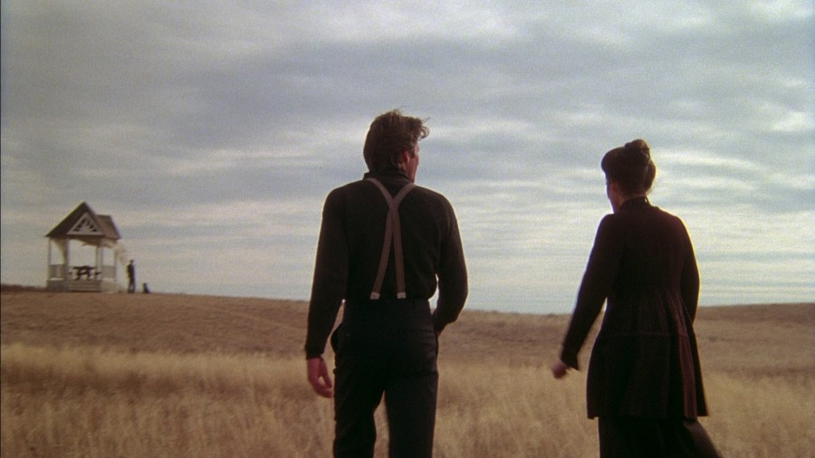
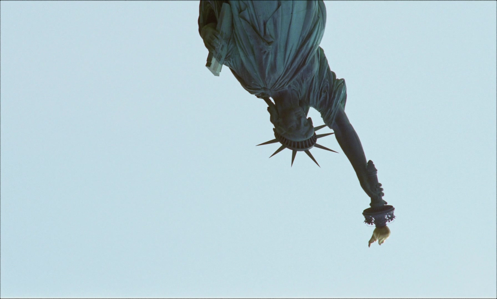
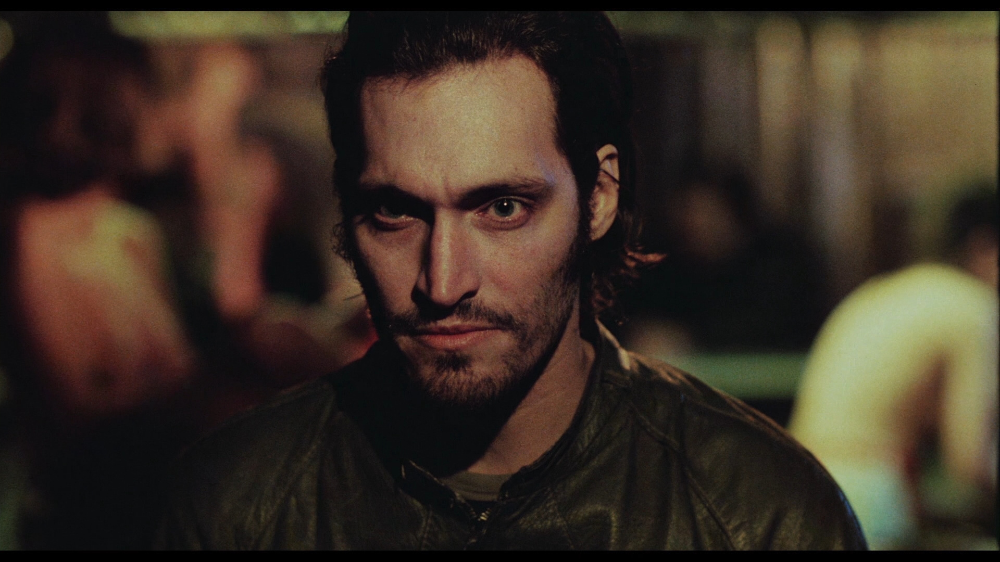
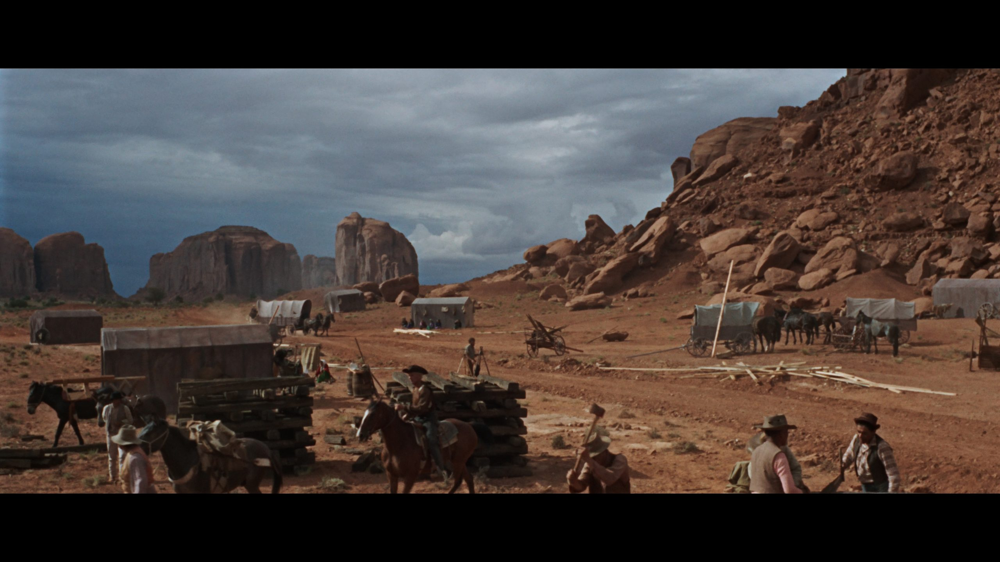

The 133 Year Old Beast

35mm film is the most influential and widely used format in cinema history.
Since the 19th century, it became the industry standard for theatrical exhibition
and professional filmmaking for over a century. The balance of the 35mm film between image quality, cost, and
practicality allowed it to dominate narrative cinema, documentaries, and experimental film alike.
Different variations of 35mm emerged over time, each designed to improve image quality, adjust new aspect ratios and reduce costs.
Style and Characteristics
35mm film is widely known for its variable grain structure, strong dynamic range, and rich color reproduction.
Compared to smaller formats like 8mm and 16mm, 35mm offers sharper detail, smoother tonal gradients,
and greater flexibility in exposure. The format retains a distinctly photochemical texture,
with visible grain and organic motion that many filmmakers still prefer over digital imagery.
Standard 35mm Film

Standard 35mm film typically runs vertically through the camera using four perforations per frame,
resulting in a native aspect ratio close to 1.37:1. Through the use of matte cropping or anamorphic
lenses, it has been adapted to many formats like 1:66:1(windowed), 1:85.1(widescreen) or 2:39:1(cinemascope). This configuration became the backbone of
Hollywood cinema, offering consistent image quality suitable for large theatrical screens.
VistaVision

VistaVision is a higher-resolution variant of 35mm film introduced by Paramount Pictures in the 1950s.
Unlike standard 35mm, the film runs horizontally(like 70mm) through the camera, using a larger negative area.
This results in finer grain, increased sharpness, and improved stability. VistaVision was often
used for visually ambitious productions and later became popular for visual effects work due to its
exceptional detail. After the 1960s the format became forgoten because of it's costs and was not used again until 61 years later when Bradey Corbet shot his film "The Brutalist" using Vistavision.
35mm Reversal Film

35 mm color reversal film produces a positive image directly on the camera original film, rather than a negative. Although such stock existed, it was extremely uncommon and was not used to shoot entire narrative films due to its lack of exposure latitude and the absence of a standard post-production workflow. The only widely documented theatrically released feature film shot entirely on 35 mm color reversal stock is Vincent Gallo’s polemic film Buffalo ’66.
Techniscope

Techniscope is a cost-saving 35mm format that uses only two perforations per frame instead of four,
effectively halving film consumption. It produces a widescreen 2.35:1 image without the use of
anamorphic lenses. Popular in Italian cinema and genre films of the 1960s and 1970s, Techniscope
offered a lower but highly cinematic look that emphasized horizontal composition and movement. A film that used this stock is Sergio Leone's Once Upon a Time In The West.